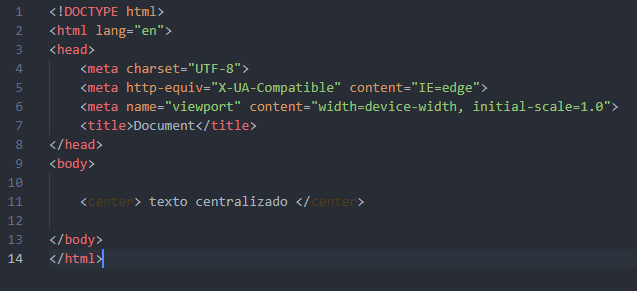

A evolução da tecnologia tem sido uma constante em nossa existência. O surgimento de novas necessidades e adaptações sempre vai ocorrer e como consequencia também surgirão mudanças para suprir estas necessidades ou se adequar a uma nova tendência.
E não é diferente com as linguagens de programação. Como qualquer outra língua, as linguagens de programação sempre estarão em constante adapdação, com novas tags e funções surgindo e outras caindo em desuso.
Um caso muito conhecido é o da tag "center" que antes era adicionada no próprio html mas hoje em dia deve ser alterada no css do arquivo.
O ideal é que uma linguagem seja simples, dinâmica e organizada, e não seria diferente com as linguagens voltadas para web, elas sempre irão ser aprimoradas tendo em vista esse modelo. Daqui a vinte anos, as linguagens voltadas para web estarão mais dinâmicas e com novas funções provavelmente referentes a automação de processos. Além disso, a grande popularização dos smartphones, que é o meio digital mais utilizado no mundo, vai ocasionar uma grande utilização dessas linguagens nesse meio. Portanto, é muito provável que as linguagens web vão estar muito mais voltadas para a criação de sites que serão exibidos na tela dos smartphones.